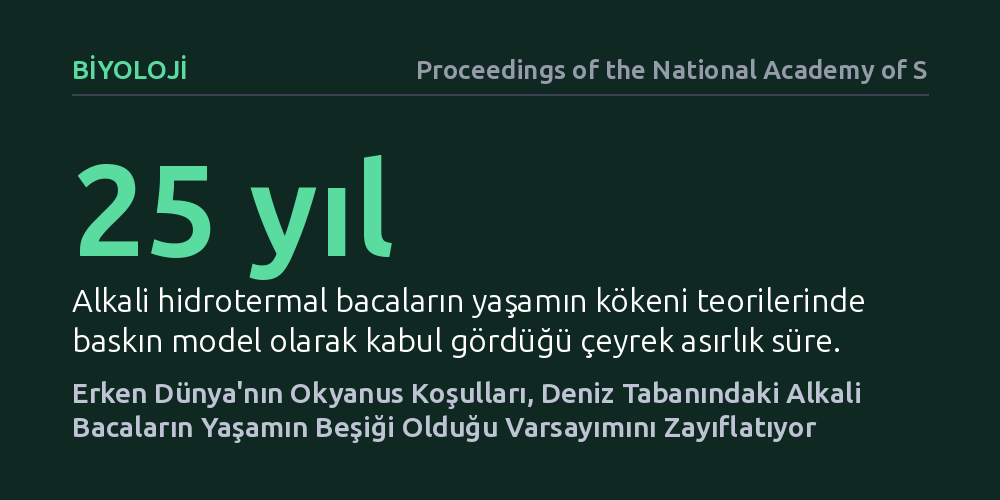

BIYOLOJI · Proceedings of the National Academy of Sciences · 2026-09-12
Araştırmacılar, deniz tabanındaki alkali bacaların erken Dünya'da yaşamı başlatıp başlatamayacağını güncel jeokimyasal modellerle yeniden inceledi. Sonuçlar, antik okyanus kimyası ve silika çökeliminin bu bacalarda organik sentez ve enerji akışı için sanılandan çok daha elverişsiz olduğunu gösterdi.
Yaşamın okyanusun karanlık derinliklerindeki bacalarda başladığına dair çeyrek asırlık yaygın kabulü sarsarak, ilk biyolojik yapıtaşlarının karasal sıcak su havuzlarında ortaya çıkmış olma olasılığını öne çıkarıyor.

Yaklaşık yirmi beş yıl önce Atlas Okyanusu'nda keşfedilen Kayıp Şehir (Lost City) benzeri alkali hidrotermal sahalar, astrobiyologlar ve evrimsel biyologlar için yaşamın başlangıcına dair en güçlü aday haline gelmişti. Magma yerine kayaç ve su tepkimesiyle ısınan bu ılık, bazik bacaların; asidik antik deniz suyuyla buluştuğunda doğal bir elektrokimyasal pil gibi çalıştığı ve ilk ilkel hücrelerin enerji ihtiyacını karşıladığı düşünülüyordu.
Ancak bu yaygın hipotez büyük oranda modern deniz kimyasına ve basitleştirilmiş laboratuvar deneylerine dayanıyordu. Dünya'nın yaklaşık 4 milyar yıl önceki ilk dönemlerine (Hadean ve Erken Arkean) dair jeolojik bilgilerimiz geliştikçe, o dönemin okyanus ortamının günümüz denizlerinden çok farklı olduğu anlaşıldı. Bu durum, uzun süredir ders kitabı doğrusu kabul edilen modelin baştan aşağı yeniden incelenmesini zorunlu kıldı.
Araştırmacılar, modern hidrotermal baca kimyasını antik döneme doğrudan kopyalamak yerine, erken Dünya'nın gerçek jeokimyasal koşullarını yansıtan kapsamlı bir termodinamik ve tepkime yolu modellemesi yürüttü. Analizde, biyolojik organizmaların henüz var olmadığı bir dünyada okyanus tabanında meydana gelen mineral çökelimleri ve hidrotermal akışkan hareketleri simüle edildi.
Özellikle okyanus tabanındaki manto peridotitlerinin deniz suyuyla karşılaşmasıyla yürüyen serpantinizasyon tepkimeleri, deniz tabanı altındaki ısı aktarımı ve geçirgenlik dinamikleri hesaba katıldı. Model, modern bacaların kalsiyum karbonat temelli gözenekli yapılarının, antik denizlerdeki yüksek çözünmüş silika ve demir derişimleri altında nasıl tepki vereceğini adım adım takip etti.
Analizlerin ortaya koyduğu en somut bulgu, erken okyanuslardaki aşırı yüksek silika derişiminin baca morfolojisini tamamen değiştirmesi oldu. Antik çağda henüz diatom gibi silika kullanan canlılar bulunmadığı için deniz suyu silikaya doymuş durumdaydı. Alkali akışkanlar bu deniz suyuyla karşılaştığında, ince gözenekli demir-kükürt zarları yerine kalın ve geçirimsiz silika kabukları hızla çökerek bacaları tıkamakta ve hücre benzeri mikro odacıkların oluşumunu engellemektedir.
Bunun yanında, hidrotermal bacaların içindeki yüksek akış hızı ve termal dengesizliğin, oluşan ilk hassas organik bileşikleri ve amino asitleri beslemek yerine hızla parçaladığı görüldü. Yaşamın kökeni için şart görülen doğal proton gradyanının ise, gerçekçi Hadean okyanus koşullarında sürekli ve kararlı bir enerji kaynağı sağlayamayacak kadar hızlı biçimde dağıldığı saptandı.
Bu sonuçlar, derin deniz tabanındaki alkali bacaların yaşamın kendiliğinden doğabileceği korunaklı ve kimyasal açıdan üretken bir beşik oluşturmadığına işaret ediyor. Bacalar zengin bir hidrojen kaynağı sağlasa da, bu enerjiyi işleyecek organik yapıların kendiliğinden oluşabilmesi için antik okyanus kimyası ciddi bir engel teşkil etmektedir.
Elde edilen bulgular, yaşamın kökenini araştıran bilim insanlarını alternatif ortamlara, özellikle karadaki jeotermal sıcak su havuzlarına yöneltmektedir. Düzenli ıslanma ve kuruma döngülerine sahip karasal havuzlar, moleküllerin yoğunlaşmasına ve yağ asidi zarlarının kendiliğinden bir araya gelmesine olanak tanıması bakımından biyokimyasal açıdan çok daha uygulanabilir bir zemin sunmaktadır.